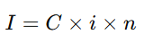
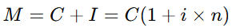
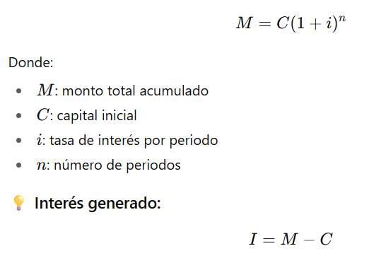

Teoría
Se presentarán los conceptos básicos a través del uso de ejemplos prácticos y visuales.
Se presentarán los conceptos básicos a través del uso de ejemplos prácticos y visuales.
🧮 1. ¿Qué son las Matemáticas Financieras?
Las matemáticas financieras estudian el valor del dinero a través del tiempo.
Su objetivo es analizar, planificar y tomar decisiones económicas considerando el interés, el plazo y el riesgo.
El principio básico es que un peso hoy vale más que un peso mañana, porque puede invertirse y generar intereses.
💰 2. Interés Simple
El interés simple se calcula solo sobre el capital inicial (C).
No se acumulan los intereses generados en periodos anteriores.
🧩 Fórmula:

Donde:
I: interés generado
C: capital inicial
i: tasa de interés (por periodo, en forma decimal)
n: número de periodos
💡 Monto total (M):

🧮 Ejemplo:
Si inviertes 1,000 € al 5% anual durante 3 años:
📈 3. Interés Compuesto
En el interés compuesto, los intereses se reinvierten; es decir, cada periodo se calculan sobre el capital inicial más los intereses acumulados.
🧩 Fórmula:

M: monto total acumulado
C: capital inicial
i: tasa de interés por periodo
n: número de periodos
💡 Interés generado:
I=M−CI = M - CI=M−C
🧮 Ejemplo:
Si inviertes 1,000€ al 5% anual compuesto durante 3 años:
🔹 Observa que con el mismo capital y tasa, el interés compuesto genera más ganancias que el interés simple.
Obra publicada con Licencia Creative Commons Reconocimiento Compartir igual 4.0